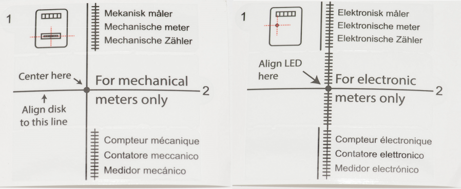
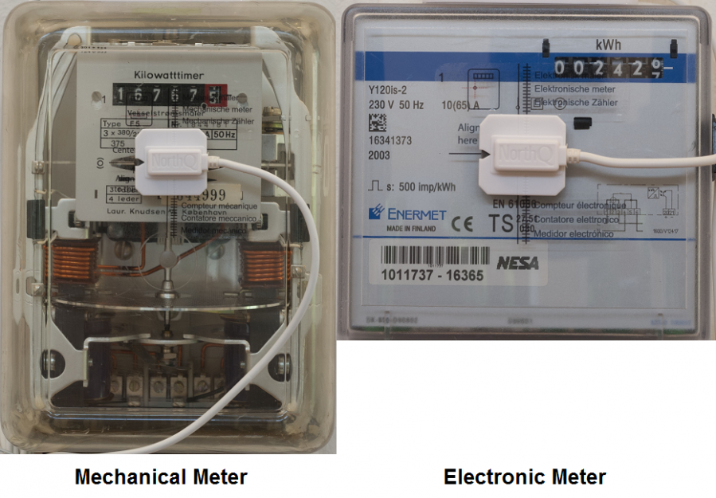

NOQ_NQ-9021
Firmware Version : 2.55 |
 |
Quick StartS This device is a Z-Wave Sensor. Inclusion and Exclusion are confirmed by triple clicking the Z-Wave button on the device. The wakeup is confirmed by single clicking the the Z-Wave button on the device. Please refer to the chapters below for detailed information about all aspects of the products usage. |
Product description
The Z-Wave Smart Meter Sensor is a compact sensor designed to read meter values from traditional electromechanical and electronic meters with optical port. The sensor is easy to install and ideal for precise meter reading down to 0,1kwh. Its compact size and external wireless transmitter makes it easy to install in any distribution board. The device is battery powered (will last about 1 year) and reports the meter value once in 15 minutes. If there won't be a Z-Wave network, the device will store values up to 3 month. This ensures, that the system can even be used in a minimal configuration with a simple Z-Wave USB Stick (Not part of delivery!) connected to a PC.
The scope of delivery is:
- The Z-Wave sensor device
- batteries
- contact sensor for the meter
- preconfigured tapes to attach the contact sensor to the meter
- a screw driver to mount the sensor to the wall - if needed
- a tool to position the contact sensor on mechanical meters
- a free windows software tool to analyse the meter data
Installation Guidelines
Before installing it may help to clean the meter, to ensure that NorthQ Power Reader will be able to read the consumption properly.
It's important to choose the correct information regarding: Meter Type and Conversion Factor. You'll typically find the information on the front of the meter.
There are two types of meters: mechanical and electronic. The NorthQ Power Reader works with almost all power meters on the market - both new and old.
Mechanical Meters
On a mechanical meter, the electricity consumption is read by using a rotating disc seen at the front of the meter. The disc rotates a certain number of times per kWh - This is called the rotation factor, and the number of rotations per kWh varies according to the model and brand, but it's always displayed on the meter itself.
Electronic Meters
On an electronic meter, the electricity consumption is read by using an LED that blinks a certain number of times per 1 kWh - This is called the impulse factor. The number of flashes per kWh also varies according to the model and brand - but is displayed on the meter itself. Some electronic meters will blink with infrared light, which isn't visible to the human eye - but these, can also be read by NorthQ Power Reader.
To take full advantage of the features in NorthQ Power Reader, you should also have an annual or interim statement from your utility at hand. On your annual statement from the utility you are able to estimate how much 1 kWh costs. Some utilities also inform how much Co2 is produced per 1 kWh.

- Enter all this information in the software interface.
- For the physical installation start by taking the sensor cable, and plug it into the wireless transmitter. Please note, that the plug is only fully inserted when a little click is heard. - It's important that the sensor cable is fully depressed, because otherwise, the reading will be inaccurate.
- Place the bracket on the back of the transmitter, and attach it with the 3 small screws using the enclosed screwdriver. This ensures that the sensor cable is properly connected. Finally, insert the two enclosed batteries in the bottom of the wireless transmitter. The LED on the wireless transmitter will blink, indicating that the batteries are correctly inserted.
- Press "Next" when you've finished assembling the wireless transmitter, and you're ready to proceed with establishing a wireless connection, between the transmitter and your computer.
- Creating the wireless connection: Insert the USB receiver into an available USB port on your computer. The wireless transmitter can store up to 60 days of measurable data, but remember, it can only transfer data to NorthQ Power Reader, when the USB receiver is inserted. Wait for the USB receiver to be recognized by the computer. - It may take several minutes. Establish the wireless connection by pressing the sensor button on the bottom of the transmitter 3 times. The LED will flash 3 times in response. The message "Transmitter found" will appear on your computer screen.
- Checking the wireless range: Before you install the transmitter at your meter, you should check whether the transmitter is within wireless range of the USB receiver. Press the sensor button 4 times when you're standing by the electricity meter where you intend to place the wireless transmitter. - The transmitter will blink 4 times in response, to indicate that the wireless range is now being examined. The USB receiver will now try to make contact with the wireless transmitter, every second, for the next 10 seconds. If the wireless transmitter is within range, you'll see the LED light up. - The longer the LED shines, the better the wireless signal. if the LED shines constantly for 10 seconds, it means that there's a good connection. If the LED flashes during the test, it means, that there is contact between the transmitter and the receiver, but that you'll experience problems with the connection. If this happens, you should consider placing the transmitter and the receiver closer together. A long cable between the sensor head and the transmitter enables you to position the transmitter wherever the connection is best. If the LED doesn't light up at all, it means that the transmitter is outside the of range of the receiver, and you'll need to move the transmitter and the receiver closer together. Press "Next", to continue, to instructions, about how to place the sensor head onto your power meter.

Installation on mechanical meters:
1. Start by removing the template from the white background, by gently pulling slip 1 on the lefthand corner of the template and place it correctly on the meter. The horizontal line is flush with the rotation disc, and where the left-handside vertical line, is aligned with the markings on the middle of the meter. When the template is in place, you should carefully pull slip 2 in order to remove the middle section of the template. The sensor head should now be placed in the middle of the template, so that the two vertical lines on the template, line up with the same lines that are etched into the surface of the sensor head. Remove the two pieces of red plastic that cover the adhesive pads on the front of the sensor head, and then attach the sensor head onto the meter.
2. Meter Adjustment: As NorthQ Power Reader must be able to work on a wide variety of mechanical meters, a simple automatic meter adjustment is neccessary. This is simply done, by pressing the sensor button five times. The LED on the transmitter will then begin to blink rapidly. You'll see that the LED will begin to blink more slowly as the adjustment is completed. Once the adjustment has been completed, you'll see, that the LED on the wireless transmitter only flashes, when the cursor on the rotating disc passes the sensor-head. If you experience problems with the meter adjustment, try placing the sensor head closer to the rotation disc, or in case of scratches on the front of the meter place the sensor on the side.
Installation on electronic meters:
Start, by removing the template from the white background, by gently pulling slip 1 on the lefthand corner of the template. The template should be placed above the LED on the power meter, where the horizontal line and the right-hand-side vertical line cross. When the template is in place, you should carefully pull slip 2 in order to remove the middle section of the template. You can now position the sensor head on the meter. The sensor head should be placed in the middle of the template, so that the two vertical lines on the template, line up with the same lines that are etched into the surface of the sensor head. Remove the two pieces of red plastic that cover the adhesive pads on the front of the sensor head, and then attach the sensor head onto the meter.
Note: It is important, that you are very careful about placing the template correctly, as NorthQ Power Reader won't be able to read your electricity consumption if the template isn't properly positioned!
Enter the meter's total consumption into your NorthQ Power Reader. Finally, click "Setup complete" to complete installation.
You'll only have to wait approx 30 minutes before your NorthQ Power Reader will have gathered enough data to begin displaying tables and graphs regarding your electricity consumption. However, you can immediately read your current-wattage-consumption, in the bottom of the widget, as long as your NorthQ Power Reader is in "Real-time" mode.
Behavior within the Z-Wave network
I On factory default the device does not belong to any Z-Wave network. The device needs to join an existing wireless network to communicate with the devices of this network. This process is called Inclusion. Devices can also leave a network. This process is called Exclusion. Both processes are initiated by the primary controller of the Z-Wave network. This controller will be turned into exclusion respective inclusion mode. Please refer to your primary controllers manual on how to turn your controller into inclusion or exclusion mode. Only if the primary controller is in inclusion or exclusion mode, this device can join or leave the network. Leaving the network - i.e. being excluded - sets the device back to factory default.
If the device already belongs to a network, follow the exclusion process before including it in your network. Otherwise inclusion of this device will fail. If the controller being included was a primary controller, it has to be reset first.
Make sure that your Z-Wave Controller is in the Inclusion-/Exclusion-Mode. Tripple click the Z-Wave button to confirm the process.
Operating the device
Normal mode:
To extend the lifetime of the batteries, the consumption data from the meter is only transferred to your computer every 15 minutes. This means, that it may take up to 15 minutes until new consumption data is received, after inserting the USB receiver into your computer.
Real time mode:
You can switch the NorthQ Power Reader into Real-time mode by pressing the sensor button once. When NorthQ Power Reader is in real-time mode, consumption data will be transferred from the wireless transmitter to the USB receiver every 5 seconds. This feature is useful if you want to examine your current wattage-consumption, or if you simply don't want to wait for the collected consumption data to be automatically transferred to your NorthQ Power Reader. NorthQ Power Reader stays in real-time mode for 10 minutes at a time, before reverting to the normal, "power-saving" mode.
When in real-time mode, you'll see that the LED on the wireless transmitter flashes every time the black marker on the rotating disc, passes the sensor head, or when the LED on your electronic meter flashes.
The more often you use the real-time mode, the more often you'll have to change batteries, as the function uses more power than normal-mode operation. Battery life-expectancy is about 1½ years for electronic meters, and about a year for mechanical meters.
If you don't wish to use the real-time mode for a full 10 minute period, press the sensor button twice, and NorthQ Power Reader will immediately return to normal mode.
Wakeup Intervals - how to communicate with the device?
W This device is battery operated and turned into deep sleep state most of the time to save battery life time. Communication with the device is limited. In order to communicate with the device, a static controller C is needed in the network. This controller will maintain a mailbox for the battery operated devices and store commands that can not be received during deep sleep state. Without such a controller, communication may become impossible and/or the battery life time is significantly decreased.
This device will wakeup regularly and announce the wakeup state by sending out a so called Wakeup Notification. The controller can then empty the mailbox. Therefore, the device needs to be configured with the desired wakeup interval and the node ID of the controller. If the device was included by a static controller this controller will usually perform all necessary configurations. The wakeup interval is a tradeoff between maximal battery life time and the desired responses of the device.
A single click on the Z-Wave button will wake up the device.
It is possible to set the node ID to 255 to send wakeup notifications as broadcast. In this mode device takes more time to go to sleep and drains battery faster, but can notify all it's direct neighbors about a wakeup.
Node Information Frame
NI The Node Information Frame is the business card of a Z-Wave device. It contains information about the device type and the technical capabilities. The inclusion and exclusion of the device is confirmed by sending out a Node Information Frame. Beside this it may be needed for certain network operations to send out a Node Information Frame.
Tripple click on the Z-Wave button will send a Node Information Frame.
Configuration Parameters
Z-Wave products are supposed to work out of the box after inclusion, however certain configuration can adapt the function better to user needs or unlock further enhanced features.
IMPORTANT: Controllers may only allow to configure signed values. In order to set values in the range 128 … 255 the value sent in the application shall be the desired value minus 256. For example: to set a parameter to 200 it may be needed to set a value of 200 minus 256 = minus 56. In case of two byte value the same logic applies: Values greater than 32768 may needed to be given as negative values too.
| Value | Description |
|---|---|
| 0 — 65535 | Pulses (Default 1024) |
| Value | Description |
|---|---|
| 1 | Pulse Meter |
| 2 | Rotating Wheel (Default) |
| Value | Description |
|---|---|
| 0 — 255 | . (Default 0) |
| Value | Description |
|---|---|
| 0 — 255 | . (Default 0) |
| Value | Description |
|---|---|
| 0 — 50 | times (Default 20) |
| Value | Description |
|---|---|
| 0 — 143 | . (Default 0) |
| Value | Description |
|---|---|
| 0 — 143 | . (Default 5) |
| Value | Description |
|---|---|
| 0 — 65535 | s (Default 0) |
| Value | Description |
|---|---|
| 0 — 4.294967295e+09 | Pulses (Default 0) |
| Value | Description |
|---|---|
| 0 — 65535 | s (Default 3) |
| Value | Description |
|---|---|
| 0 — 65535 | s (Default 0) |
| Value | Description |
|---|---|
| 0 | Off |
| 1 | LED blinks at pulse counting (Default) |
Technical Data
| Battery Type | 2 * AA |
| Explorer Frame Support | No |
| SDK | 5.02 pl3 |
| Device Type | Slave with routing capabilities |
| Generic Device Class | Meter |
| Specific Device Class | Simple Meter |
| Routing | No |
| FLiRS | No |
| Firmware Version | 2.55 |